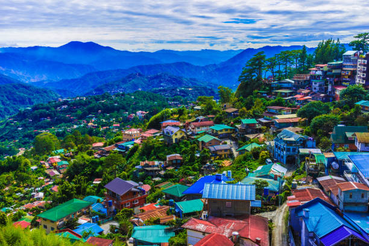

Luzon Top Destination
Experience the captivating beauty and rich diversity of Luzon,
the crown jewel of the Philippines

Palawan
Hailed as a tropical paradise, enchants visitors with its pristine beauty and untouched natural wonders.

Baguio
Hailed as a tropical paradise, enchants visitors with its pristine beauty and untouched natural wonders.

Banaue Rice Terraces
Marvel at the ancient wonders of the Banaue Rice Terraces, considered the "Eighth Wonder of the World."